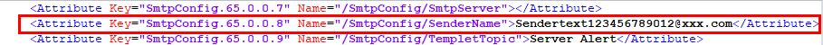

Présentation de la fonction
Sur la page Mise à jour de la config., vous pouvez importer et exporter des fichiers de configuration de cartes contrôleur BMC, BIOS et RAID.

- Seul l'administrateur peut consulter et exporter des fichiers de configuration. Le fichier de configuration à importer ou exporter est au format .xml. La taille ne peut pas dépasser 1 Mo.
- Si KVM est activé, les paramètres de cryptage KVM ne peuvent pas être importés. Il n'y a pas de telles restrictions sur les autres caractéristiques.
- Les configurations de la carte contrôleur RAID ne prennent effet qu'une fois que le test POST (Power-On Self-Test) du système est terminé.
- Si les éléments de configuration importés impliquent une modification de la version TLS ou de la configuration réseau, les connexions Web établies seront déconnectées. Si "Échec de l'importation" est affiché, reconnectez-vous à l'interface Web BMC et consultez le journal des opérations pour déterminer si l'importation a réussi.
- Lorsque le fichier de configuration exporté contient par défaut la configuration en texte chiffré, la configuration en texte chiffré ne prend pas effet si le fichier de configuration est importé sur un autre serveur. Pour que la configuration prenne effet, vous devez modifier la configuration en texte clair, supprimer les balises de commentaire de la ligne, puis importer le fichier de configuration.
- Dans le fichier de configuration exporté, l'adresse IP du port réseau de gestion BMC est commentée.
- La configuration BMC, la configuration du BIOS et certaines configurations du contrôleur RAID peuvent être importées et exportées.
Importer un fichier de configuration

L'importation de fichiers de configuration est une opération à haut risque. Faites preuve de prudence lorsque vous effectuez cette opération.
- (Facultatif) Modifiez le fichier de configuration.
- Utilisez un éditeur de texte pour ouvrir le fichier de configuration à importer et localisez la configuration à modifier.
- Modifiez le fichier de configuration.
Par exemple, changez la valeur de SenderName de ******, comme indiqué dans la Figure 1 en Sendertext123456789012@xxx.com.
- Supprimez "<!--" au début de la ligne et "-->" à la fin de la ligne.Figure 2 Fichier de configuration après édition

- Enregistrez et fermez le fichier de configuration.
- Cliquez sur Ajouter le fichier sélectionnez le fichier de configuration à télécharger.
Le fichier téléchargé sera affiché sur la page.
Le fichier de configuration à importer est au format .xml. La taille ne peut pas dépasser 1 Mo.
- Cliquez sur Importer.
Une boîte de dialogue de confirmation s'affiche, vous invitant à saisir le mot de passe de l'utilisateur actuel.
- Saisissez le mot de passe de l'utilisateur actuel et cliquez sur Confirmer.
Les informations suivantes s'affichent :
L'importation a réussi. La configuration du BIOS ne prend effet qu'après le redémarrage du système de service.
- La configuration BMC et la configuration du contrôleur RAID prennent effet immédiatement après avoir été importées.
- Après l'importation de la configuration du BIOS, vous devez redémarrer le système d'exploitation du serveur pour que la configuration prenne effet.
- Si vous sélectionnez Redémarrer plus tard, vous pouvez redémarrer le système d'exploitation du serveur au moment opportun.
- Si vous sélectionnez Redémarrer maintenant, la page Contrôle d'alimentation s'affiche. Vous pouvez choisir la bonne façon de redémarrer le système d'exploitation du serveur.
De la configuration du contrôleur RAID, seule la configuration d'État de la réécriture, d'Erreur de réécriture sur SMART et d'État JBOD peut être importée. La configuration des lecteurs logiques et physiques ne peut pas être importée.

Exporter les fichiers de configuration
- Sur la page Mise à jour de la configuration, cliquez sur Exporter.
Le fichier de configuration est exporté et enregistré dans le répertoire par défaut du PC local.